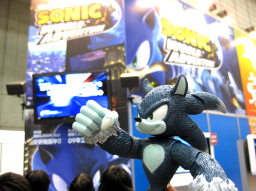
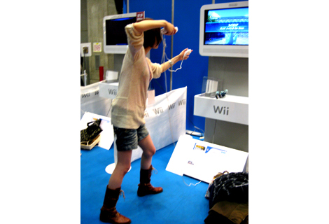
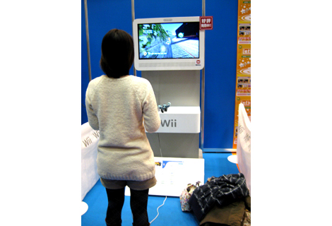
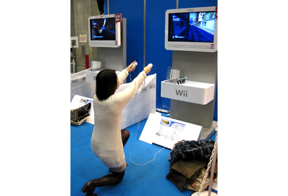
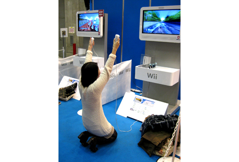

『ジャンプフェスタ2008に行ってきました！』
2008年12月22日
12月20日。
幕張メッセで開催された「ジャンプフェスタ2008」の会場で
ひとり途方に暮れているマツバラ……
ヨシノ、遅いなあ……
昼頃にソニックブースに集合だって言ったのに……
（携帯ブルブル）……あ！！ ヨシノから着信！（ぴっ）
（電話の向こうのヨシノ）やっ。
「やっ」じゃないよ！
ヨシノ、今どこにいるの？
（電話の向こうのヨシノ）えーっと……わからない。
へ？
（電話の向こうのヨシノ）会場には到着してると思うんだけど
人が多すぎて入口がわからない……
ウロウロしてたら迷った……
え……
（電話の向こうのヨシノ）マツバラ、救助に来て。
何やってるの―――！！
……というわけで、
マツバラとヨシノの2人は、
「ジャンプフェスタ2008」に行ってきました！
ヨシノが遭難するなどのハプニングをはさみつつ
プレイアブル出展されていたWii版SWAで楽しく遊んできたので
今回は、その様子をお届けします☆

やっとたどりついた……！
凄い人だね！
ちなみに「SWA」ブースは……
1時間待ち！？
おぉ～。すごいね。
早速並ぼうか。
期待してくれてる方が沢山いるんだね！
ありがたや、ありがたや……
よし、ここは
ソニック開発に携わった女子スタッフとして
エレガントなプレイでWii版の魅力を伝えなきゃ！！
エレガントか……
任せて。超得意。
（待つこと、しばし……）
スタッフさんに、「お待たせしました！どうぞ！」と
案内されます。
わーい♪
では、私から……

た―――！！
よ、ヨシノ、力みすぎだから！！
いやあ、夢中になった～。
Wiiリモコン振るとソニックがビュンッと加速するのが楽しい♪
「エレガント」はどこに行ったの……
仕方ない、
私がお手本を見せてあげる！！
どいて！！

はっ！！

てや！！

た―――！！
マツバラ……
なんか、だんだん礼拝のポーズになってる。
あれっ、そう！？
いや～、丸まってるソニックきゅんが
あまりにも可愛くて、つい……
「エレガント」は……！？
ああっ、すっかり忘れてた！！
ていうか、スタッフのお兄さんの目が痛い。
お、お邪魔しました～！
照れ笑いをしながら会場を後にした2人。
でも、堪能したね～！
Wii版はソニックの動きに合わせてアクションできるから
ソニックと一緒に走ってるみたいで気持ちいい！
今回は時間の関係で遊べなかったけど
ウェアホッグパートもいいよね。
コンボのために左右交互に振ったり、
強攻撃を出そうとして同時に振ったりしてると
ウェアホッグと一心同体になったみたい。
会場にお越しくださった皆さん、
どうもありがとうございました～！
いきなり礼拝をはじめてすいません。
すごく楽しいゲームなので
ひとりでも多くの方に遊んで頂けますように☆
日時: 2008年12月22日 19:30 | パーマリンク


 ソニックを愛する、元気な『SWA』2年目プランナー。
ソニックを愛する、元気な『SWA』2年目プランナー。 マイペースな『SWA』2年目プランナー。
マイペースな『SWA』2年目プランナー。
 ご意見・ご要望はこちら
ご意見・ご要望はこちら RSS
RSS